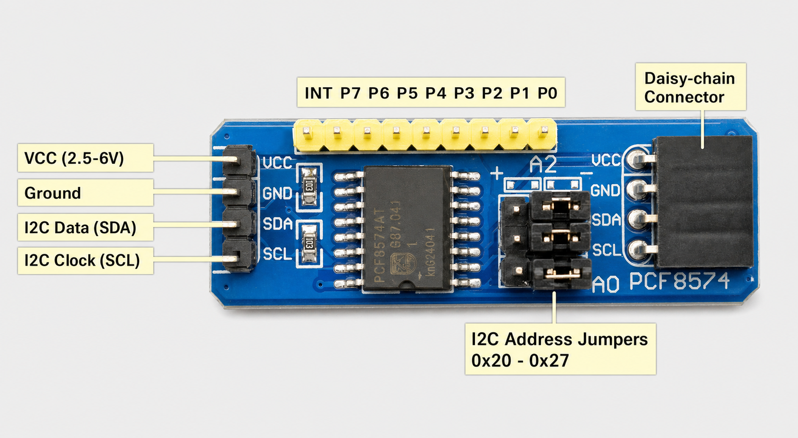
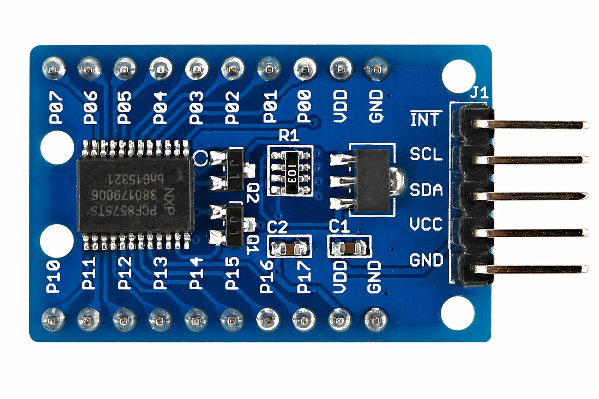
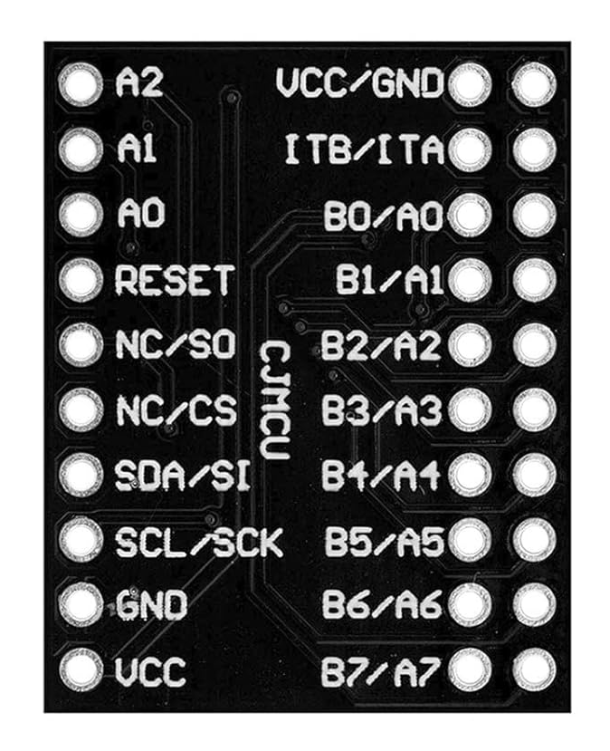
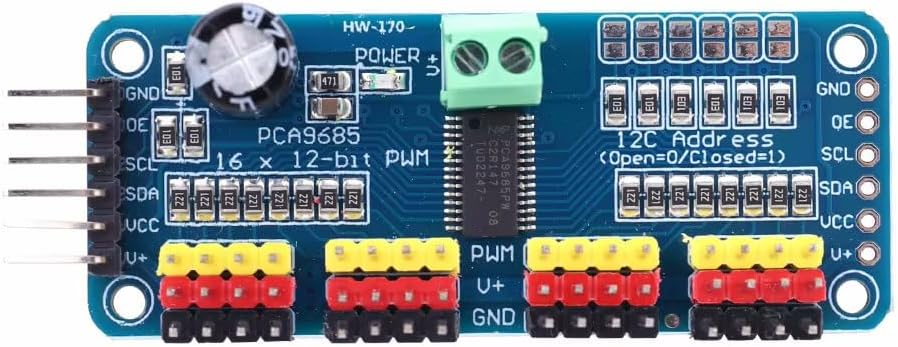
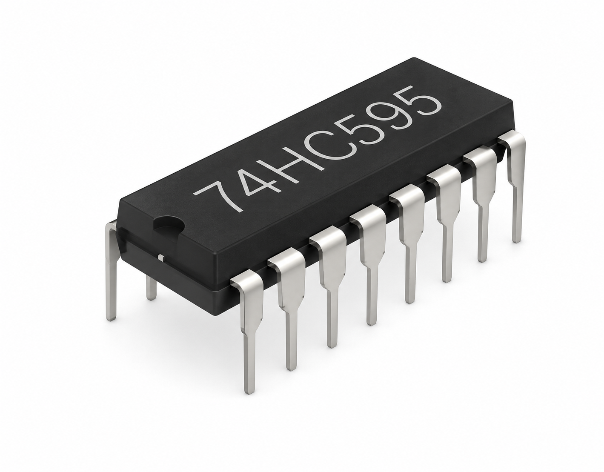

Unser Anliegen
In diesem Projektbereich entwickeln wir kleine, übersichtliche Programme, mit denen sich Hardware im Umfeld des Dobot Magician zunächst unabhängig testen lässt. Dadurch können Anschlussfehler, falsche Adressen und ungeeignete Einstellungen erkannt werden, bevor die Bauteile Teil einer umfangreicheren Robotersteuerung werden.
Nach einem erfolgreichen Einzeltest sollen die Programme als Grundlage
für die Integration der Hardware in das ESP32-Steuerprogramm
esp32_dobot_steuerung_v1_3.py dienen. Der ESP32 kann damit
zusätzliche Taster, Sensoren, Statusanzeigen, Signalleuchten oder
Aktoren bereitstellen und über die vorhandene Verbindung mit dem
PC-Programm und dem Dobot Magician zusammenarbeiten.
Schrittweise Vorgehensweise
- Jedes Modul wird einzeln und ohne Dobot getestet.
- Anschlüsse, Versorgung und Geräteadresse werden kontrolliert.
- Ein- und Ausgänge beziehungsweise PWM-Kanäle werden praktisch geprüft.
- Die modulspezifischen Funktionen werden in wiederverwendbare Klassen überführt.
- Erst danach werden passende PC-Befehle und Statusmeldungen ergänzt.
- Zum Schluss erfolgt der gemeinsame Test mit PC und Dobot Magician.
Diese Aufteilung erleichtert die Fehlersuche und verhindert, dass bei einem Problem gleichzeitig Hardware, ESP32-Programm, Kommunikation und Roboterbewegung untersucht werden müssen.
I²C-Bus übersichtlich prüfen
Der einfache Scanner zeigt ausschließlich die aktuell gefundenen I²C-Adressen an. Dadurch lässt sich die Einstellung der Adresspins kontrollieren, ohne dass Ausgaben eines umfangreicheren Modultests ablenken.
Verbindlicher erster Schritt: Bei jedem I²C-Modul
wird zuerst i2c-scanner.py ausgeführt. Erst wenn das
Modul mit der erwarteten Adresse gefunden wurde, folgt das zugehörige
Testprogramm.
Testaufbau und Bauteile
Eine eigene Übersichtsseite zeigt die verwendeten ESP32-Anschlüsse, unsere verbindlichen Kabelfarben und die fünf Erweiterungsbausteine mit einer kurzen Beschreibung.
Die ersten fünf Erweiterungen
PCF8574 – einfacher I²C-Portexpander
Der PCF8574 stellt acht quasi-bidirektionale Anschlüsse bereit und
eignet sich für einfache Taster, Schalter oder Status-LEDs. Für die
Verbindung zum ESP32 werden nur SDA und SCL benötigt.
pcf8574_test.py im Code-Viewer öffnen
pcf8574_test-in-out.py im Code-Viewer öffnen
pcf8574_test-in-out-2.py im Code-Viewer öffnen

PCF8575 – einfacher I²C-Portexpander mit 16 Anschlüssen
Der PCF8575 arbeitet ähnlich wie der PCF8574, stellt jedoch 16
quasi-bidirektionale Anschlüsse bereit. Er eignet sich, wenn viele
einfache digitale Ein- oder Ausgänge benötigt werden.
pcf8575_test.py im Code-Viewer öffnen

MCP23017 – leistungsfähiger I²C-Portexpander
Der MCP23017 erweitert den ESP32 um 16 getrennt konfigurierbare
Ein- und Ausgänge. Er bietet unter anderem interne Pull-up-Widerstände
und ist deshalb für umfangreichere Bedien- und Anzeigeelemente
geeignet.
mcp23017_test.py im Code-Viewer öffnen
mcp23017_test-interrupt.py im Code-Viewer öffnen

PCA9685 – PWM-Erweiterung
Der PCA9685 stellt 16 PWM-Kanäle bereit. Damit lassen sich
beispielsweise Helligkeiten, Servos oder geeignete Treiberstufen
ansteuern, ohne die PWM-Ressourcen des ESP32 für jeden Kanal einzeln
zu benötigen.
pca9685_test.py im Code-Viewer öffnen

74HC595 – klassisches Schieberegister
Der 74HC595 ist kein I²C-Baustein. Er benötigt drei GPIO-Leitungen für
Daten-, Schiebe- und Speichertakt und stellt acht digitale Ausgänge
bereit. Mehrere Bausteine können hintereinandergeschaltet werden, ohne
weitere Steuerleitungen am ESP32 zu belegen.
74hc595_test.py im Code-Viewer öffnen

Anschluss- und Testhinweise
Die gemeinsame Anleitung enthält Pinbelegungen, Testaufbauten, Sicherheitshinweise und Informationen zu möglichen I²C-Adresskonflikten.
README.md im Markdown-Viewer öffnen
Wichtig: PCF8574, PCF8575 und MCP23017 können
abhängig von ihrer Beschaltung dieselbe I²C-Adresse im Bereich
0x20 bis 0x27 verwenden. Beim ersten Test
wird deshalb nur ein Modul angeschlossen. Größere Lasten dürfen nicht
direkt von den Ausgängen der Erweiterungsbausteine versorgt werden.
PCF8574-Adressbrücken
Die Leitungen A2, A1 und A0 bilden die drei niederwertigen Bits der I²C-Adresse. LOW bedeutet GND, HIGH bedeutet VCC.
| A2 | A1 | A0 | I²C-Adresse |
|---|---|---|---|
| LOW | LOW | LOW | 0x20 |
| LOW | LOW | HIGH | 0x21 |
| LOW | HIGH | LOW | 0x22 |
| LOW | HIGH | HIGH | 0x23 |
| HIGH | LOW | LOW | 0x24 |
| HIGH | LOW | HIGH | 0x25 |
| HIGH | HIGH | LOW | 0x26 |
| HIGH | HIGH | HIGH | 0x27 |
Für den Test mit zwei Modulen erhält Modul 1 die Einstellung
A2 A1 A0 = 000 und damit 0x20. Bei Modul 2
wird nur A0 auf HIGH gesetzt:
A2 A1 A0 = 001 und damit 0x21.
Maßgeblich sind die GND-/Minus- und VCC-/Plus-Markierungen auf der
jeweiligen Platine. Der I²C-Scan muss anschließend
0x20 und 0x21 anzeigen.
Bauelemente verstehen
Beim Aufbau einer Experimentierumgebung für einen ESP32 im Umfeld des Dobot Magician steht immer wieder die Frage im Raum: Was können wir von den verwendeten Ports und Bauelementen erwarten? Die dazu erarbeiteten Grundlagen sind im Themenbereich Bauelemente zusammengestellt.
Nächste Schritte
Nach den praktischen Einzeltests legen wir fest, welche Anschlüsse eine konkrete Aufgabe am Dobot übernehmen. Anschließend werden einheitliche Befehle zum Setzen und Abfragen der Anschlüsse entwickelt. Erst die geprüften Funktionen werden in die ESP32-Dobot-Steuerung übernommen.